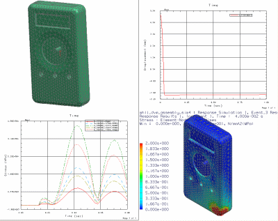

NX 响应仿真是一个高级仿真可与 NX Nastran 一起使用的求解过程。它可用来评估受到各种载荷条件限制的结构模型的静态或动态响应。软件可使用模态方法来计算这些响应。
|

|
您可以通过定义网格、材料属性、载荷及特殊边界条件（称为激励位置）来准备要分析的有限元模型。然后，可对 SOL 103 实特征值或 SOL 103 — 响应仿真 NX Nastran 解算方案求解来评估动态响应。
模态模型由模态、阻尼和其他模态信息组合而成。
该解算方案可为结构生成下列类型的模态形状：
正则模态 — 表示在指定的固有频率（特征值）下，结构的变形形状（特征向量）。
附着模态 — 表示由于在将要施加激励力的位置施加单位静态载荷而产生的静态变形形状。附着模态是使用“模态加速度”数据恢复方法所必需的。
约束模态 — 表示由于边界自由度 (DOF) 发生单位静态位移而产生的静态变形。约束模态是使用“强迫运动”激励类型所必需的。
分布式附着模态 — 表示由于动态载荷而产生的结构行为。它们是计算对分布式动态激励进行的模态加速度响应所必需的。
您可以向 FE（物理）模型应用可表示外力、强迫运动或分布载荷的激励函数。
使用“NX 函数和图表”工具，可以创建、研究和管理激励函数和响应函数。另外，您可以将所提供的可定制函数生成器与信号处理应用程序集成在一起。
激励和模态参数包含在以下类型的分析事件其中之一中。
事件类型 |
描述 |
瞬态 |
计算结构对一组同步激励的动态响应，这些激励随着时间的推移而发生变化。瞬态激励可以是施加到节点自由度上的点载荷（节点力或强迫运动），也可以是分布载荷。 软件会计算每个即时点的响应。 瞬态激励的示例包括：在试车跑道上开车的时间历史或者其中的机械设备在一段时间内受到激励的任何事件。 |
频率 |
计算结构对一组同步振荡激励的稳态响应。频率激励可以是施加到节点自由度的点载荷，也可以是分布载荷。 软件会计算每个频率下的响应。 频率激励的示例包括：汽车发动机的转动或车轮失衡对司机舒适度的影响。 |
随机 |
计算结构对一个或多个同步随机激励所做出响应的功率谱密度 (PSD)、平方根 (RMS) 和平面交叉率 (LCR) 结果。随机激励可以是节点力 PSD 函数、强迫运动 PSD 函数（位移、速度和加速度）或分布载荷。 对于频域中的两个随机激励，您可以通过定义它们之间的相位关系或时间延迟来使它们关联起来。每个频率下的 PSD 响应都通过使用激励源和所请求的响应数量之间的传送函数来计算，而随机过程的 RMS 是针对 PSD 函数计算的。 随机激励的示例包括喷气发动机的噪音、路面的轮廓以及湍流对飞机造成的影响。 |
响应谱 （又称为冲击响应谱） |
计算结构对一组同步基础激励的峰值响应，这些激励由响应谱函数定义。峰值响应可通过使用模态近似方法（如绝对值方 法、平方和的平方根方法和其他方法）来计算。这是在每个模式频率下的预期输出，因此也就是整个模型在一个模态频率下的响应，该响应然后需要与响应谱范围内 的任何其他模式频率合并。 响应谱冲击激励的示例包括：飞机着陆、原子核超压、下降试验和地震效应。 |
DDAM（动态设计分析方法） |
计算轮船部件对施加到船身、甲板或外板上冲击的动态响应。 动态设计分析方法是由美国海军开发的。您可以向水上船只或潜水艇的船身、甲板或外板施加 DDAM 激励。您可以在垂直 (Y) 方向、横过船的方向 (Z) 和前/后 (X) 方向上应用这些强迫运动激励。可用的变形类型包括弹性变形和弹性-塑性变形。 响应仿真使用美国海军规范 DDS-072-1。 为了实现机密性，软件会要求您在每次执行响应计算时都输入 DDAM 载荷系数。您可以在文本文件中预定义这些系数。 |
准静态 |
将结构的静态响应计算为一组同步随时间变化的静态激励。要创建静态激励，可使用函数缩放在模态解算方案中应用的载荷。软件可计算每个即时响应，方法是将所有载荷的静态结果与指定的时间历程缩放函数进行线性组合（重叠）。 如果只对静态结果感兴趣，并需要比全动态解算方案性能更快的解算方案性能，则该事件类型很有用。 |
NX 软件中的算法可用来计算结构对激励的动态响应。您可以计算如下内容：
给定节点处的位移、速度、加速度和反作用力。
给定单元处的应力、应变、单元力、梁的单元力和壳的合应力。
对给定的载荷历史、强度、峰值、RMS 和平面交叉率的响应结果。
您可以使用后处理工具（如等值线图和 XY 图）来计算响应。
使用 NX 中的函数和图表工具，可以创建、研究和管理激励和响应函数。
响应仿真还支持在 Teamcenter Integration 模式下运行 NX。您可以从 Teamcenter 数据库重新加载仿真，包括所有关联的激励和响应函数。